Inspector
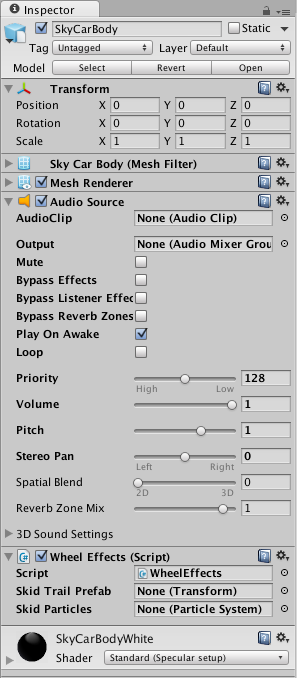
Games in Unity are made up of multiple GameObjects that contain meshes, scripts, sounds, or other graphical elements like Lights. The Inspector displays detailed information about your currently selected GameObject, including all attached Components and their properties. Here, you modify the functionality of GameObjects in your scene. You can read more about the GameObject-Component relationship, as it is very important to understand.
Any property that is displayed in the Inspector can be directly modified. Even script variables can be changed without modifying the script itself. You can use the Inspector to change variables at runtime to experiment and find the magic gameplay for your game. In a script, if you define a public variable of an object type (like GameObject or Transform), you can drag and drop a GameObject or Prefab into the Inspector to make the assignment.
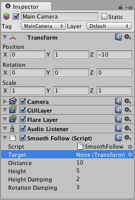
Click the question mark beside any Component name in the Inspector to load its Component Reference page.
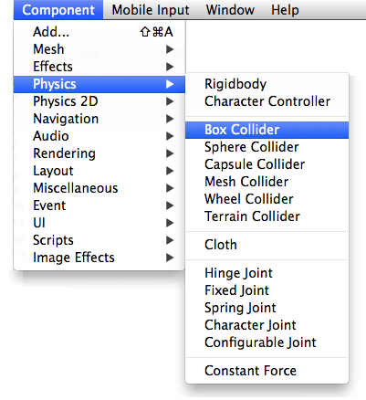
You can click the tiny gear icon (or right-click the Component name) to bring up a context menu for the specific Component.
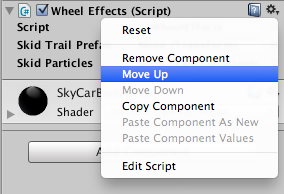
The Inspector will also show any Import Settings for a selected asset file.
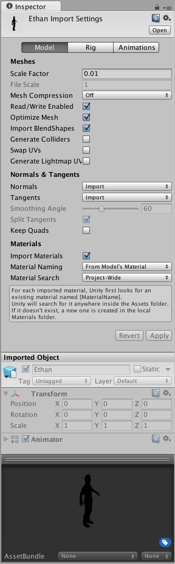
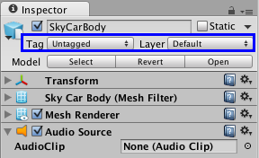
Use the Layer drop-down to assign a rendering Layer to the GameObject. Use the Tag drop-down to assign a Tag to this GameObject.
Prefabs
If you have a Prefab selected, some additional buttons will be available in the Inspector. For more information about Prefabs, please view the Prefab manual page.
Icons
The inspector for all items in Unity is shown with a distinctive icon in the top left corner next to the name. For a GameObject or Prefab, a custom icon can be set to identify the object in the scene. If you click on the icon, a selection menu will appear:-
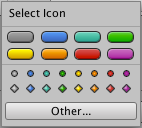
The large oblong icons at the top of the menu will show the object's name in the Scene View on a panel of the chosen color.
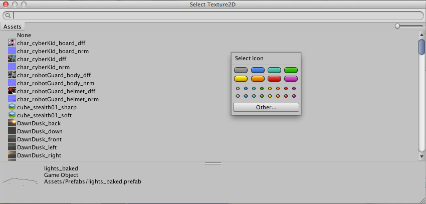
The smaller icons in the lower part of the menu will not show the object's name but simply identify it with a small pip of the chosen shape and color. The Other button at the bottom of the menu lets you select any texture from the project to identify the object.
Labels
Unity allows assets to be marked with Labels to make them easier to locate and categorise. The bottom item on the inspector is the Asset Labels panel.
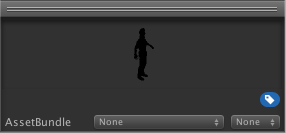
At the bottom right of this panel is a label button. Clicking this button will bring up a menu of available labels
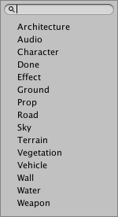
You can select one or more items from the labels menu to mark the asset with those labels (they will also appear in the Labels panel). If you click a second time on one of the active labels, it will be removed from the asset.
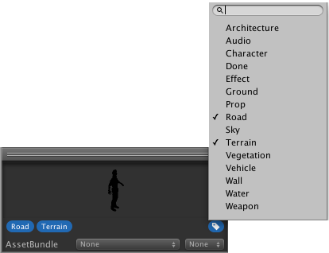
The menu also has a text box that you can use to specify a search filter for the labels in the menu. If you type a label name that does not yet exist and press return/enter, the new label will be added to the list and applied to the selected asset. If you remove a custom label from all assets in the project, it will disappear from the list.
Once you have applied labels to your assets, you can use them to refine searches in the Project Browser (see this page for further details). You can also access an asset's labels from an editor script using the AssetDatabase class.